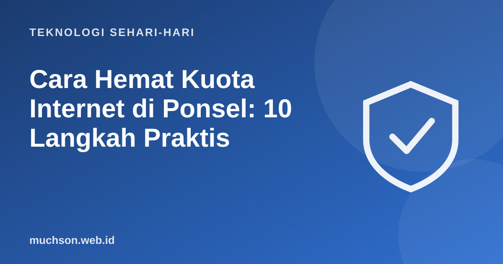

Beranda › Artikel › Teknologi Sehari-hari
Teknologi Sehari-hariCara Hemat Kuota Internet di Ponsel: 10 Langkah Praktis
Kuota sering habis bukan karena Anda banyak browsing, melainkan karena hal yang berjalan di belakang layar: pembaruan otomatis, video yang memutar sendiri, dan unggahan cadangan. Memeriksa dan mengaturnya bisa menghemat banyak.

Langkah pertama: ketahui yang paling boros
Hampir semua ponsel menyediakan menu pemakaian data per aplikasi. Buka pengaturan jaringan atau data seluler, lihat urutannya, dan Anda akan sering menemukan satu atau dua aplikasi yang jauh lebih boros dari dugaan. Mulailah dari sana.
Sepuluh langkah penghematan
Tips terbesar
Layanan yang memutar video otomatis atau menyimpan cadangan foto ke awan adalah pemakai kuota tersembunyi. Memastikan keduanya hanya berjalan di Wi-Fi sering menghemat paling banyak.
Tanya jawab
Apakah mode hemat data aman dipakai?
Aman. Ia membatasi aktivitas latar belakang dan menurunkan kualitas konten, kadang dengan sedikit tertunda notifikasinya.
Mengapa kuota habis padahal saya jarang memakai?
Biasanya karena aplikasi di latar belakang, pembaruan otomatis, atau tethering (berbagi internet) yang tidak disadari.
Apakah berbagi hotspot memakai banyak kuota?
Ya, karena perangkat lain ikut memakai kuota ponsel Anda, termasuk pembaruan otomatis yang besar.